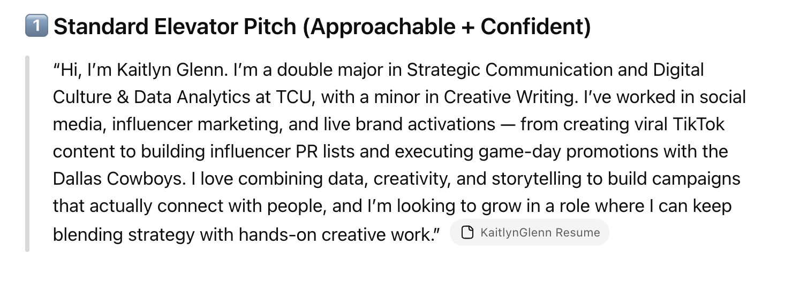
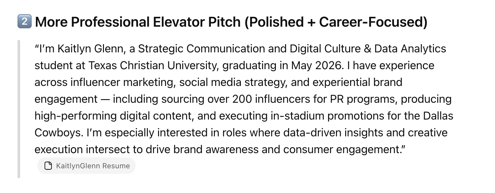
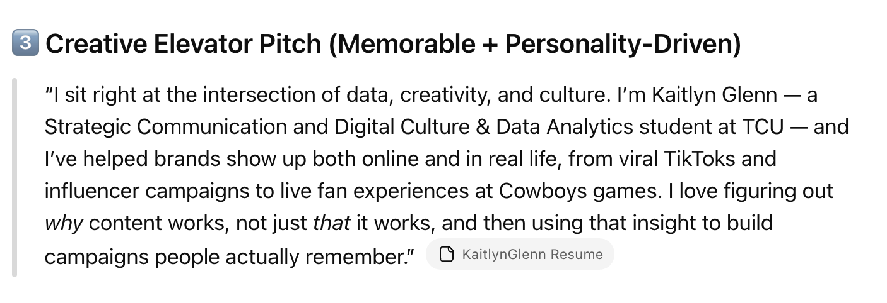

Lab Requirements
In this lab, I explored and critically evaluated AI tools relevant to my work as a DCDA student — including text generation, image creation, and code assistance. Learning how to use AI tools effectively to aid in my work.
Introduction
For Lab 2, I decided to work with Canva Magic Studio, which I have not used before, and ChatGPT, a tool that I have used before. I chose these becasue I wanted to have the AI create designs as well as wording that I can integrate into the future and to test its capabilities.
Tool 1: Canva Magic Studio
This AI software allows you to create designs for social media posts, presentations, and marketing materials by imputing a prompt of whatever idea you are trying to generate.
The software did a good job at creating flyers, but fell short on the information inside. I needed to go in and manually change the wording of the flyer to make it have the specific information I needed, but overall it did a good job.
Appropriate Use
This tool would be extremely helpful in creating a basic layout for flyers, posters, slideshows, and more, but not as helpful in adding the information you want because it can tend to switch up the order and get the information wrong. If you do not go through and proofread the creations, you might miss small details that are crucial to being correct versus incorrect.
Ethical Considerations
There are not very many concerns, other than the information errors that you need to personally correct within the software. I don't believe there is any adressing these issues as they can be different for everyone.
Tool 2: ChatGPT
This AI software allows you to generate text for a variety of purposes, such as writing emails, creating content for social media, and helping with research.
ChatGPT was helpful in generating elevator pitches based on my resume. I asked it to provide three options: standard, professional, and creative.
Appropriate Use
This tool is extremely helpful in generating initial drafts of text, brainstorming ideas, and providing inspiration for content creation. It is less helpful when you need highly specific or accurate information that requires deep research or domain expertise.
Ethical Considerations
There are concerns about the accuracy of information generated by ChatGPT. It also limits creativity and is not good for the environment. The developer is definitely not addressing these concerns as they want the platform to succeed and continue to grow.



Broader Reflections
Overall, I do feel as though both of these tools and this lab were very helpful in certain situations. I have used ChatGPT in multiple other circumstances in my personal life, but also regarding DCDA. Especially in developing code that I can't quite understand and then having it explain it for me. AI can come in handy whenever you need something, but the key for me is to use it in moderation and not to allow it to overtake my creativity. It can overpower your work at times and change it from being personal to robotic in a matter of seconds, so it is always smart to go through and check or delete certain items. AI is an evergrowing network of platforms, but can be dangerous if not used correctly. In the future, we need to ask questions regarding the ethical usage of AI and how it can impact our lives both positively and negatively.